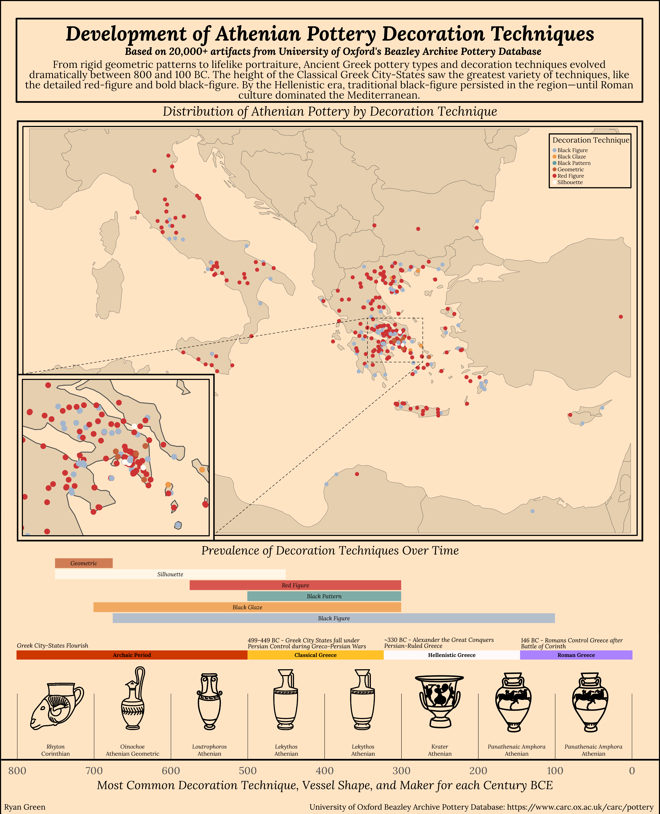

Packages
library(tidyverse)
library(janitor)
library(dplyr)
library(here)
library(stringr)
library(tmap)
library(sf)
library(extrafont)
library(patchwork)
library(rnaturalearth)
library(rnaturalearthdata)
library(png)
library(grid)
library(showtext)Ryan Green
March 14, 2025

Ancient Greek culture has proved to be foundational to western culture as we know it. Greek language, philosophy, science, and politics have shaped the modern world since the rise of city-states like Athens and Corinth nearly 2,800 years ago.
Of the many artistic achievements of the ancient Greeks, their pottery stands out as both a practical craft and a storytelling medium. They developed decoration techniques that not only served aesthetic purposes but also preserved myths, daily life, and historical events in precise detail. From bold contrast in black-figure pottery to the refined scenes in red-figure designs, these techniques evolved over the centuries, showcasing the Greeks’ mastery of form and narrative.
This infographic explores the decoration techniques used by the ancient Greeks over the centuries, and is based on more than 20,000 Athenian pottery artifacts held in the University of Oxford’s Beazley Archive Pottery Database1. All code for this infographic was done in R, and can be found at the bottom of this page.
For this infographic, I chose two main graphic forms: timelines and maps. Since I wanted to focus on the development and changes in decoration technique over time, showing this in a timeline felt appropriate. I have three timelines in the bottom half of the infographic:
The first (from the top) shows the decoration techniques over time, based on the minimum and maximum ages of artifacts with certain decoration techniques in the dataset. This is meant to give a general idea of when a technique may have been introduced or faded away in time.
The second timeline shows the major time periods in ancient Greek history, and is not based on the pottery data at all. It is a custom timeline I made to provide historical context to the other timelines. The dates and historical events for this timeline were sourced from Britannica2.
The third timeline provides the x-axis for all three timelines, which are stacked together to share this axis. This timeline shows each century BCE from 800 to 0, and displays the most common decoration technique, most common pottery shape, and most common manufacturer in the dataset. It also displays some excellent custom graphics that I created just for this timeline, so that the pottery shapes could be understood (would you know the shape of a Lekythos if I didn’t?).
The map (with inlaid map) shows the locations of all the artifacts that had location data. I decided to color them by decoration technique, as that is the focus of my infographic. I used the same colors as I did in the decoration techniques timeline to keep it consistent.
There is a lot of text on this infographic. Instead of having legends for the timelines, I decided to put the text over the segment for each decoration technique/historical period. I felt this made it more cohesive and reduced the amount of eye movement to understand each plot. Otherwise, the only plot with axis labels is the timeline at the bottom.
Concerning themes, I used theme_void for the two upper timelines, and theme_minimal for the timeline on the bottom to maintain the x-axis. This bottom timeline also has my custom pottery images. I wanted an antique looking color for the background and chose “bisque1”, with “wheat3” accents in the map. For the colored timelines, I wanted more gentle colors that would work well with the background and with each other.
For the typography on my infographic, I chose the font Lora, as I think it is easy to read but also appears classic. I bolded and italicized the title and subtitle to set them apart from the introduction text in the frame at the top.
Concerning the general design, since I had three timelines for the same time period, I thought it made sense to have them share the x-axis, so I decided to stack them on top of each other, taking the full width of the graphic at the bottom. It made sense to arrange the map and title/text above the timelines, giving an aesthetic space between them. The subtitle and paragraph at the top is meant to contextualize the infographic, and each plot title helps narrow that context further. The historical periods timeline also helps contextualize the data.
I initially attmepted to create and render the entire infographic directly in R, however there were so many elements that it was nearly impossible. I instead opted to save each plot as a .png image and assemble the plot in Affinity Designer. So while all plots are derived from data and generated using code in R, the assembly of the infographic was not done in R.
Considering accessibility, I did my best to choose colors that would be colorblind friendly, although in the map some of the colored dots appear similar in color with the dots that size. Making them larger would obscure the data however, so I chose to keep them smaller.
Considering DEI, this infographic is so focused on historical data that it doesn’t apply to any modern communities. The data source might however (University of Oxford), as the British during the last several centuries were notorious for their collection and ‘ownership’ of artifacts that are rightfully owned by other countries. A notable example of this in modern history is the Elgin Marbles, which the British Museum refuses to return to Greece. The fact that this infographic is based on artifacts that may or may not be kept in England against Greece’s wishes could have DEI implications.
# Reading in data for Athenian, Athenian Geometric, and Corinthian pottery
athenian <- read_csv(here('data/beazley_athenian_pottery_archive.csv'))
geometric <- read_csv(here('data/beazley_athenian_geometric.csv'))
corinthian <- read_csv(here('data/beazley_corinthian.csv'))
# Adding custom font, Lora
font_add_google(name = 'Lora', family = 'lora')
showtext_auto()
showtext_opts(dpi = 100)# Basic data cleaning before combining datasets
athenian <- athenian %>%
clean_names() %>%
select(vase_number,
fabric,
technique,
shape_name,
provenance,
date,
latitude,
longitude) %>%
separate(date, into = c("max_age", "min_age"), sep = " to ") %>%
mutate(
min_age = as.numeric(min_age),
max_age = as.numeric(max_age)
) %>%
filter(!is.na(min_age) & !is.na(max_age))
# Keeping only techniques that are most prevalent (some only have a single observation)
athenian <- athenian %>%
filter(technique %in% c("BLACK GLAZE", "BLACK-FIGURE", "RED-FIGURE", "BLACK PATTERN", "SILHOUETTE"))
# Basic data cleaning before combining datasets
geometric <- geometric %>%
clean_names() %>%
select(vase_number,
fabric,
technique,
shape_name,
provenance,
date,
latitude,
longitude) %>%
separate(date, into = c("max_age", "min_age"), sep = " to ") %>%
mutate(
min_age = as.numeric(min_age),
max_age = as.numeric(max_age)
) %>%
mutate(technique = ifelse(is.na(technique), "GEOMETRIC", technique))
geometric <- geometric %>%
filter(technique %in% c("SILHOUETTE", "GEOMETRIC"))
# Basic data cleaning before combining datasets
corinthian <- corinthian %>%
clean_names() %>%
select(vase_number,
fabric,
technique,
shape_name,
provenance,
date,
latitude,
longitude) %>%
separate(date, into = c("max_age", "min_age"), sep = " to ") %>%
mutate(
min_age = as.numeric(min_age),
max_age = as.numeric(max_age)
)
corinthian <- corinthian %>%
filter(technique %in% c("BLACK GLAZE", "BLACK-FIGURE", "RED-FIGURE", "BLACK PATTERN", "SILHOUETTE"))
# Binding the datasets into one
pottery <- bind_rows(athenian, geometric, corinthian)# Extreme data cleaning
patterns_to_remove <- c(", FRAGMENTS", ", FRAGMENT", " FRAGMENT", "A", " B", " BELLY", " \\(\\?\\)", " SQUT", " NECK", " COLUMN", ", SIN", ",ELLY", ",ELL", ",ELLS", ", TYPE", ", ", " ")
pottery <- pottery %>%
mutate(shape_name = str_replace_all(shape_name, str_c(patterns_to_remove, collapse = "|"), ""))
pottery <- pottery %>%
mutate(shape_name = ifelse(shape_name == "CUP, LITTLE MSTERND", "LITTLE MASTER CUP", shape_name)) %>%
mutate(shape_name = ifelse(shape_name == "KRTER, CLYX", "CALYX KRATER", shape_name)) %>%
mutate(shape_name = ifelse(shape_name == "KRTER", "KRATER", shape_name)) %>%
mutate(shape_name = ifelse(shape_name == "FRGMENT", "FRAGMENT", shape_name)) %>%
mutate(shape_name = ifelse(shape_name == "MPHOR,", "AMPHORA", shape_name)) %>%
mutate(shape_name = ifelse(shape_name == "MPHOR, PNTHENIC PRIZE", "PANATHENAIC AMPHORA", shape_name)) %>%
mutate(shape_name = ifelse(shape_name == "MPHORPNTHENIC PRIZE", "PANATHENAIC AMPHORA", shape_name)) %>%
mutate(shape_name = ifelse(shape_name == "KRATER,ELL", "KRATER", shape_name)) %>%
mutate(shape_name = ifelse(shape_name == "KRTER,ELL", "KRATER", shape_name)) %>%
mutate(shape_name = ifelse(shape_name == "MPHORBELLY", "AMPHORA", shape_name)) %>%
mutate(shape_name = ifelse(shape_name == "LEKYTHOSSQUT", "LEKYTHOS SQUAT", shape_name)) %>%
mutate(shape_name = ifelse(shape_name == "PLTE", "PLATE", shape_name)) %>%
mutate(shape_name = ifelse(shape_name == "CUPLITTLE MSTERND", "LITTLE MASTER CUP", shape_name)) %>%
mutate(shape_name = ifelse(shape_name == "CUPLITTLE MSTER LIP", "LITTLE MASTER CUP", shape_name)) %>%
mutate(shape_name = ifelse(shape_name == "KRTERCLYX", "CALYX KRATER", shape_name)) %>%
mutate(shape_name = ifelse(shape_name == "KRTERVOLUTE", "KRATER", shape_name)) %>%
mutate(shape_name = ifelse(shape_name == "STND", "STAND", shape_name)) %>%
mutate(shape_name = ifelse(shape_name == "KRTERCOLUMN", "KRATER", shape_name)) %>%
mutate(shape_name = ifelse(shape_name == "MPHORPNTHENICPRIZE", "PANATHENAIC AMPHORA", shape_name)) %>%
mutate(shape_name = ifelse(shape_name == "MPHORNECK", "AMPHORA", shape_name)) %>%
mutate(shape_name = ifelse(shape_name == "LBSTRON", "ALABASTRON", shape_name)) %>%
mutate(shape_name = ifelse(shape_name == "RYBLLOS", "RHYTON", shape_name)) %>%
mutate(shape_name = ifelse(shape_name == "KRTERBELL", "KRATER", shape_name)) %>%
mutate(shape_name = ifelse(shape_name == "KRTERS", "KRATER", shape_name)) %>%
mutate(shape_name = ifelse(shape_name == "KRTERBELLS", "KRATER", shape_name)) %>%
mutate(shape_name = ifelse(shape_name == "CUPLITTLEMSTERND", "LITTLE MASTER CUP", shape_name)) %>%
mutate(shape_name = ifelse(shape_name == "CUPLITTLEMSTER", "LITTLE MASTER CUP", shape_name)) %>%
mutate(shape_name = ifelse(shape_name == "CUPSKYPHOS", "SKYPHOS", shape_name)) %>%
mutate(shape_name = ifelse(shape_name == "CUPSTEMLESS", "CUP", shape_name)) %>%
mutate(shape_name = ifelse(shape_name == "FIGUREVSE", "VASE", shape_name)) %>%
mutate(shape_name = ifelse(shape_name == "FRGMENTS", "FRAGMENT", shape_name)) %>%
mutate(shape_name = ifelse(shape_name == "CUPLITTLEMSTERLIP", "LITTLE MASTER CUP", shape_name)) %>%
mutate(shape_name = ifelse(shape_name == "PYXISLID", "PYXIS", shape_name)) %>%
mutate(shape_name = ifelse(shape_name == "MPHOR", "AMPHORA", shape_name)) %>%
mutate(shape_name = ifelse(shape_name == "TNKRD", "TANKARD", shape_name)) %>%
mutate(shape_name = ifelse(shape_name == "CUPSIN", "CUP", shape_name)) %>%
mutate(shape_name = ifelse(shape_name == "CALYX KRATER", "KRATER", shape_name)) %>%
filter(shape_name != 'VRIOUS') %>%
filter(shape_name != 'UNKNOWN') %>%
filter(shape_name != 'FRAGMENT')
# Further cleaning, keeping any shapes that have more than 200 observations, creating an average age column, and cleaning the technique names
pottery <- pottery %>%
group_by(shape_name) %>%
filter(n() >= 200) %>%
mutate(avg_age = (min_age + max_age) / 2) %>%
ungroup() %>%
mutate(technique = str_replace_all(technique, "-", " "),
technique = str_to_title(tolower(technique)))
# Creating a new dataframe from `pottery` to see techniques over time. This new frame, `techniques_overtime` has only observations that have dates
pottery_age <- pottery %>%
select(fabric, technique, shape_name, min_age, max_age) %>%
mutate(avg_age = (min_age + max_age) / 2,
century = as.integer(abs(avg_age) / 100))
techniques_overtime <- pottery_age %>%
group_by(technique) %>%
summarise(
max_age = min(max_age, na.rm = TRUE),
min_age = max(min_age, na.rm = TRUE)
) %>%
ungroup()
# Creating a function to count observations
counting <- function(x) {
ux <- unique(x)
ux[which.max(tabulate(match(x, ux)))]
}
# Creating a new dataframe with most common technique, shape, and maker (`fabric`)
centuries <- pottery_age %>%
group_by(century) %>%
summarise(
most_common_technique = counting(technique),
technique_count = sum(technique == counting(technique), na.rm = TRUE),
most_common_shape = counting(shape_name),
shape_name_count = sum(shape_name == counting(shape_name), na.rm = TRUE),
most_common_fabric = counting(fabric),
fabric_count = sum(fabric == counting(fabric), na.rm = TRUE)
) %>%
mutate(century = if_else(is.na(century), 8, century),
most_common_shape = str_to_title(tolower(most_common_shape)),
most_common_fabric = str_to_title(tolower(most_common_fabric)),
century = century * 100)
# Making the centuries a numeric value
centuries <- centuries %>%
mutate(century = as.numeric(as.character(century)))# Custom colors for each technique
custom_colors <- c(
"Red Figure" = "brown3",
"Black Figure" = "lightsteelblue3",
"Black Glaze" = "tan2",
"Black Pattern" = "cadetblue",
"Silhouette" = "floralwhite",
"Geometric" = "#C3613A")
plot1 <- ggplot(techniques_overtime, aes(y = fct_reorder(technique, min_age, .fun = min, .desc = TRUE))) +
geom_segment(aes(x = -max_age, xend = -min_age, yend = technique, color = technique),
size = 3, alpha = 0.8) +
geom_text(aes(x = -((min_age + max_age) / 2),
label = technique,
family = 'lora'),
color = 'black',
vjust = 0.5,
size = 12,
fontface = 'italic') +
scale_x_reverse(limits = c(820, -35), expand = c(0, 0)) +
scale_y_discrete(expand = c(0.1, 0)) +
theme_void() +
labs(title = "Prevalence of Decoration Techniques Over Time") +
theme(
axis.ticks.x = element_blank(),
axis.text.y = element_blank(),
panel.grid.major = element_blank(),
panel.grid.minor = element_blank(),
plot.title = element_text(hjust = 0.5, family = 'lora', face = 'italic', size = 70),
legend.position = 'none',
plot.background = element_rect(fill = 'bisque1', color = NA),
plot.margin = unit(c(0.5,0,0,0), "cm")
) +
scale_color_manual(values = custom_colors) +
theme(aspect.ratio = 1/10) +
coord_cartesian(clip = "off")
ggsave("outputs/plot1.png", plot1, width = 6, height = 1, units = "in", dpi = 900)
plot1# Importing my custom pottery shape icons
rhyton <- readPNG("images/rhyton.png")
rhyton <- rasterGrob(rhyton, interpolate = TRUE)
krater <- readPNG("images/krater.png")
krater <- rasterGrob(krater, interpolate = TRUE)
lekythos <- readPNG("images/lekythos.png")
lekythos <- rasterGrob(lekythos, interpolate = TRUE)
lotrophouros <- readPNG("images/lotrophouros.png")
lotrophouros <- rasterGrob(lotrophouros, interpolate = TRUE)
oinochoe <- readPNG("images/oinochoe.png")
oinochoe <- rasterGrob(oinochoe, interpolate = TRUE)
amphora <- readPNG("images/amphora.png")
amphora <- rasterGrob(amphora, interpolate = TRUE)
# Creating timeline with most common shape, technique, and maker
plot2 <- ggplot(centuries, aes(x = century, y = 1)) +
geom_text(aes(x = (century - 50),
label = most_common_shape,
family = 'lora',
fontface = 'italic'),
vjust = -2.8,
size = 12) +
geom_text(aes(x = (century - 50),
label = most_common_fabric,
family = 'lora'),
vjust = -1,
size = 12) +
geom_hline(yintercept = 1, color = "black") +
geom_vline(xintercept = c(0, 100, 200, 300, 400, 500, 600, 700, 800),
linetype = "solid",
color = "black",
size = 0.1) +
scale_x_reverse(
breaks = c(0, 100, 200, 300, 400, 500, 600, 700, 800),
labels = function(x) x,
limits = c(830, -30),
expand = c(0, 0)
) +
scale_y_continuous(limits = c(1, 1.1), expand = c(0, 0)) +
labs(x = "Most Common Decoration Technique, Vessel Shape, and Maker for each Century BCE",
y = "",
title = "") +
theme_minimal() +
theme(
axis.text.y = element_blank(),
axis.text.x = element_text(family = 'lora',
size = 60),
axis.title.x = element_text(family = 'lora',
face = 'italic',
size = 70),
panel.grid.major = element_blank(),
panel.grid.minor = element_blank(),
plot.title = element_text(hjust = 0.5,
family = 'lora'),
legend.position = "none",
plot.background = element_rect(fill = "bisque1",
color = NA),
plot.margin = unit(c(-0.7,0,-0.5,-0.5), "cm")) +
theme(aspect.ratio = 2/20) +
coord_cartesian(xlim = c(835, -35),
clip = "off") +
annotation_custom(rhyton, xmin = -700, xmax = -800, ymin = 1.01, ymax = 1.15) +
annotation_custom(oinochoe, xmin = -600, xmax = -700, ymin = 1.03, ymax = 1.16) +
annotation_custom(lotrophouros, xmin = -515, xmax = -585, ymin = 1.02, ymax = 1.16) +
annotation_custom(lekythos, xmin = -400, xmax = -500, ymin = 1.01, ymax = 1.17) +
annotation_custom(lekythos, xmin = -300, xmax = -400, ymin = 1.01, ymax = 1.17) +
annotation_custom(krater, xmin = -205, xmax = -295, ymin = 1.02, ymax = 1.16) +
annotation_custom(amphora, xmin = -110, xmax = -200, ymin = 1.02, ymax = 1.16) +
annotation_custom(amphora, xmin = -10, xmax = -100, ymin = 1.02, ymax = 1.16)
ggsave("outputs/plot2.png", plot2, width = 6, height = 2, units = "in", dpi = 900)
plot2events <- data.frame(
start_date = c(800, 500, 323, 146),
end_date = c(500, 323, 146, 0),
period = c('Archaic Period', 'Classical Greece', 'Hellenistic Greece','Roman Greece')
)
period_colors <- c(
"Archaic Period" = "orangered3",
"Classical Greece" = "goldenrod1",
"Hellenistic Greece" = "snow",
"Roman Greece" = "mediumpurple1"
)
plot3 <- ggplot(events, aes(x = period, y = 1)) +
geom_segment(data = events, aes(x = start_date, xend = end_date,
y = 1, yend = 1, color = period),
linewidth = 3) +
geom_text(data = events, aes(x = (start_date + end_date) / 2,
y = 1,
label = period),
family = "lora",
fontface = "bold",
size = 12,
color = "black") +
scale_x_reverse() +
theme_void() +
theme(legend.position = "none",
plot.background = element_rect(fill = 'bisque1',
color = NA),
plot.margin = unit(c(0,-0.7,0,-0.7), "cm")) +
scale_color_manual(values = period_colors) +
coord_cartesian(clip = "off")
ggsave("outputs/plot3.png", plot3, width = 6, height = 0.2, units = "in", dpi = 900)
plot3# Converting `pottery` to a shapefile for mapping
pottery_sf <- pottery %>%
filter(!is.na(latitude), !is.na(longitude))
pottery_sf <- st_as_sf(pottery_sf, coords = c("longitude", "latitude"), crs = 4326)
# Adding and clipping the world map to the Mediterranean region
world <- ne_countries(scale = "medium", returnclass = "sf")
world <- st_transform(world, crs = 3857)
bbox_med <- st_as_sfc(st_bbox(c(
xmin = 5,
xmax = 35.5,
ymin = 30,
ymax = 46
), crs = 4326))
bbox_athens <- st_as_sfc(st_bbox(c(
xmin = 23.5,
xmax = 24,
ymin = 37.8,
ymax = 38.1
), crs = 4326))
bbox_med <- st_transform(bbox_med, crs = st_crs(world))
bbox_athens <- st_transform(bbox_athens, crs = st_crs(world))
med <- st_intersection(world, bbox_med)
athens <- st_intersection(world, bbox_athens)
pottery_sf <- st_transform(pottery_sf, crs = st_crs(med))
# Sorting `pottery_sf` by average age, to get the tm_dots to appear with oldest observations on top
pottery_sf <- pottery_sf %>% arrange(avg_age)# Creating map, points colored by technique with custom colors
map <- tm_shape(med) +
tm_polygons(col = 'wheat3',
border.col = 'grey30',
lwd = 0.2,
alpha = 0.5) +
tm_shape(pottery_sf) +
tm_dots(col = "technique",
size = 0.03,
palette = custom_colors,
title = "Decoration Technique ") +
tm_layout(
main.title = "Distribution of Athenian Pottery by Decoration Technique",
main.title.position = "center",
main.title.fontfamily = 'lora',
main.title.fontface = 'italic',
main.title.size = 0.7,
outer.margins = c(0,0,0,0),
bg.color = 'bisque1',
outer.bg.color = 'bisque1',
frame = TRUE,
frame.double.line = TRUE,
legend.title.fontfamily = 'lora',
legend.text.fontfamily = 'lora',
legend.frame = TRUE,
legend.title.size = 0.5,
legend.text.size = 0.3,
legend.position = c(0.85, 0.84))
tmap_save(map,
filename = here::here("outputs", "map.png"),
height = 4,
width = 6,
dpi = 900)
mapmap_athens <- tm_shape(athens) +
tm_polygons(col = 'wheat3',
border.col = 'grey30',
lwd = 0.8,
alpha = 0.5) +
tm_shape(pottery_sf) +
tm_dots(col = "technique",
size = 0.09,
palette = custom_colors,
title = "Decoration Technique ") +
tm_layout(
# outer.margins = c(0.2,0.2,0.2,0.2),
bg.color = 'bisque1',
# outer.bg.color = 'bisque1',
frame = TRUE,
frame.double.line = TRUE,
legend.show = FALSE)
tmap_save(map_athens,
filename = here::here("outputs", "map_athens.png"),
height = 2,
width = 2,
dpi = 900)
map_athens